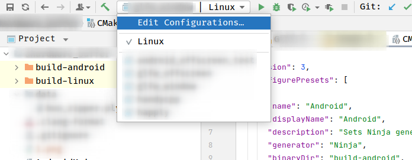

它的作用是以文本的方式记录你的构建环境。
比如说我有一份代码，我要在Linux(C++)和Android(NDK, C++)两个平台上都构建。以前的做法是写两个脚本。一个脚本用来构建Linux artifact, 一个用来构建Android artifact。
# build_linux.sh
mkdir build
cd build
cmake ..
make
# build_android.sh
mkdir build-android
cd build-android
cmake -DCMAKE_BUILD_TYPE=Debug \
-G Ninja \
-DANDROID_ABI=arm64-v8a \
-DANDROID_NATIVE_API_LEVEL=29 \
-DCMAKE_TOOLCHAIN_FILE=${ANDROID_NDK_HOME}/build/cmake/android.toolchain.cmake \
-DANDROID_TOOLCHAIN=clang \
-DCMAKE_BUILD_TYPE=Debug \
-DCMAKE_INSTALL_PREFIX=../out/install/Android \
-DCMAKE_MAKE_PROGRAM=ninja \
../
ninja
这种方法也算是解决了我构建的问题。但是如果我要使用CLion导入工程，这个脚本就帮不上我一点忙了。
为了让CLion识别Android构建环境，我需要把一大堆的-DANDROID_ABI之类的通过图形界面的方式填进去。换个开发环境就要再来一遍。
使用CMakePresets可以一劳永逸。
这个clion也可以识别，如图所示：

坑：CLion不太能识别你的环境变量。第一个图中用到了ANDROID_NDK_HOME变量。但是这个变量设置在
~/.bashrc,~/.zshrc等文件里不起作用。
不起作用的方法：写在~/.bashrc, ~/.zshrc, ~/.profile, /etc/environment, /etc/profile.d/whatever_younameit.sh里，然后通过图形界面打开clion。
起作用的方法：确保shell中有这个环境变量后，从shell命令行启动。
起作用的方法：写在/etc/environment, /etc/profile.d/xxx里，重启电脑（也许注销图形界面再回来也行)。
起作用的方法：写在Clion的Appearance & Behavior -> Path Variable里。
find_package(Git)
if(Git_FOUND)
message("Git found: ${GIT_EXECUTABLE}")
execute_process(COMMAND
${GIT_EXECUTABLE} rev-parse --short HEAD
WORKING_DIRECTORY "${CMAKE_SOURCE_DIR}"
OUTPUT_VARIABLE GIT_SHA1
ERROR_QUIET OUTPUT_STRIP_TRAILING_WHITESPACE)
execute_process(COMMAND
${GIT_EXECUTABLE} log -1 --format=%ad --date=local
WORKING_DIRECTORY "${CMAKE_SOURCE_DIR}"
OUTPUT_VARIABLE GIT_DATE
ERROR_QUIET OUTPUT_STRIP_TRAILING_WHITESPACE)
execute_process(COMMAND
"${GIT_EXECUTABLE}" log -1 --format=%s
WORKING_DIRECTORY "${CMAKE_SOURCE_DIR}"
OUTPUT_VARIABLE GIT_COMMIT_SUBJECT
ERROR_QUIET OUTPUT_STRIP_TRAILING_WHITESPACE)
message("GIT SHA1: ${GIT_SHA1}")
message("GIT DATE: ${GIT_DATE}")
message("GIT COMMIT SUBJECT: ${GIT_COMMIT_SUBJECT}")
endif()
#include <string>
const std::string GIT_SHA1 = "@GIT_SHA1@";
const std::string GIT_DATE = "@GIT_DATE@";
const std::string GIT_COMMIT_SUBJECT = "@GIT_COMMIT_SUBJECT@";
option(FOO_ENABLE "Enable Foo" ON)
if(FOO_ENABLE)
set(FOO_STRING "foo")
endif()
configure_file(foo.h.in foo.h @ONLY)
foo.h.in
#cmakedefine FOO_ENABLE
#cmakedefine FOO_STRING "@FOO_STRING@"
#cmakedefine的好处是如果对应的宏没有定义，则输出的foo.h内容为：
foo.h
/* #undef FOO_ENABLE */
/* #undef FOO_STRING */
pkg-config是一个linux命令，可以用来在linux查找提供了.pc文件的包。
引用一个软件包主要有三件事，一个是确定这个包有没有安装，二个是这个的头文件在哪个目录下面，三个是这个包的动态链接库都有啥。
使用pkg-config的方式：
find_package(PkgConfig REQUIRED)
这里有两个命令。
pkg_check_modules (FOO glib-2.0>=2.10 gtk+-2.0)
确定glib-2.0和gtk+-2.0都是存在的，并且glib-2.0的版本要大小等于2.10。
pkg_search_module (BAR libxml-2.0 libxml2 libxml>=2)
libxml-2.0和libxml要有一个存在。
上述命令中的FOO, BAR称为prefix， glib-2.0>=2.10 libxml2这种称为moduleSpec。
在prefix和moduleSpec之间可以加REQUIRED，如果没有找到cmake就会报错停止。
有两种方法：
The following variables may be set upon return. Two sets of values exist: One for the common case (<XXX> = <prefix>) and another for the information pkg-config provides when called with the --static option (<XXX> = <prefix>_STATIC).
<XXX>_FOUND
set to 1 if module(s) exist
<XXX>_LIBRARIES
only the libraries (without the '-l')
<XXX>_LINK_LIBRARIES
the libraries and their absolute paths
<XXX>_LIBRARY_DIRS
the paths of the libraries (without the '-L')
<XXX>_LDFLAGS
all required linker flags
<XXX>_LDFLAGS_OTHER
all other linker flags
<XXX>_INCLUDE_DIRS
the '-I' preprocessor flags (without the '-I')
<XXX>_CFLAGS
all required cflags
<XXX>_CFLAGS_OTHER
the other compiler flags
#### 使用imported target
pkg_check_modules(foo_libs REQUIRED libxml glib-2.0 IMPORTED_TARGET)
target_link_libraries(xxxx PkgConfig::foo_libs)
New in version 3.6: The IMPORTED_TARGET argument will create an imported target named PkgConfig::<prefix> that can be passed directly as an argument to target_link_libraries().
target_link_libraries(<target>
<PRIVATE|PUBLIC|INTERFACE> <item>...
[<PRIVATE|PUBLIC|INTERFACE> <item>...]...)
target_link_libraries引用一个item时，会同时让target使用它的动态链接和头文件路径。